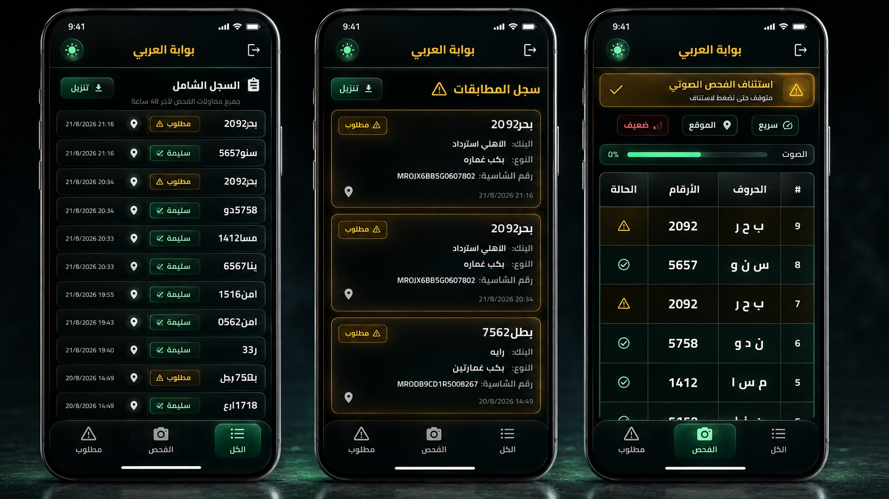
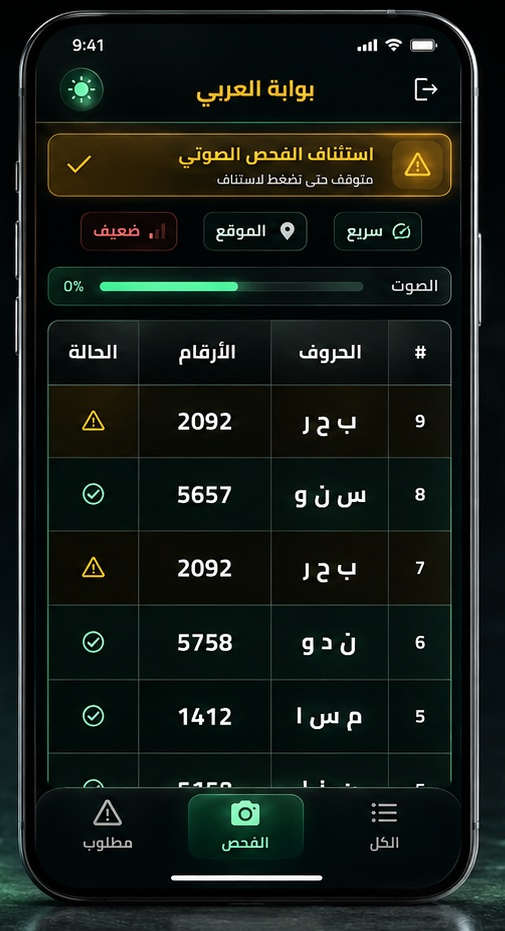

استخرجتُ الألوان من أوامر الرسم داخل ملف El_Araby_Plate_Scanner_UI_Handoff_Specification_AR مباشرةً — لا من تقدير بالعين. وبالأسفل الصور المضمّنة في الملف نفسه، ثم مقارنة حيّة بين اللوحة الحالية ولوحة المواصفة على مكوّنات حقيقية.
في التطبيق الحقيقي «مطلوب» لونها ذهبي كهرماني #ffb800 ومعها مثلث
تحذير — وليست حمراء. والأحمر #ff5b5b محجوز لحالة خطأ فعلية، ظهر في
الصور على شارة «إشارة ضعيفة».
أنا بنيتُ كل الشاشات على أحمر = مطلوب. تبنّي لوحة المواصفة يعني تغيير
دلالة لون لا درجته فقط، وهذا قرارك أنت لا قراري.


بيانات توضيحية — ليست بيانات حقيقية · نظام العربي لفحص اللوحات
الألوان مستخرَجة برمجيًا من أوامر rg و k داخل تدفّقات الملف،
والصور من تدفّقات DCTDecode فيه.